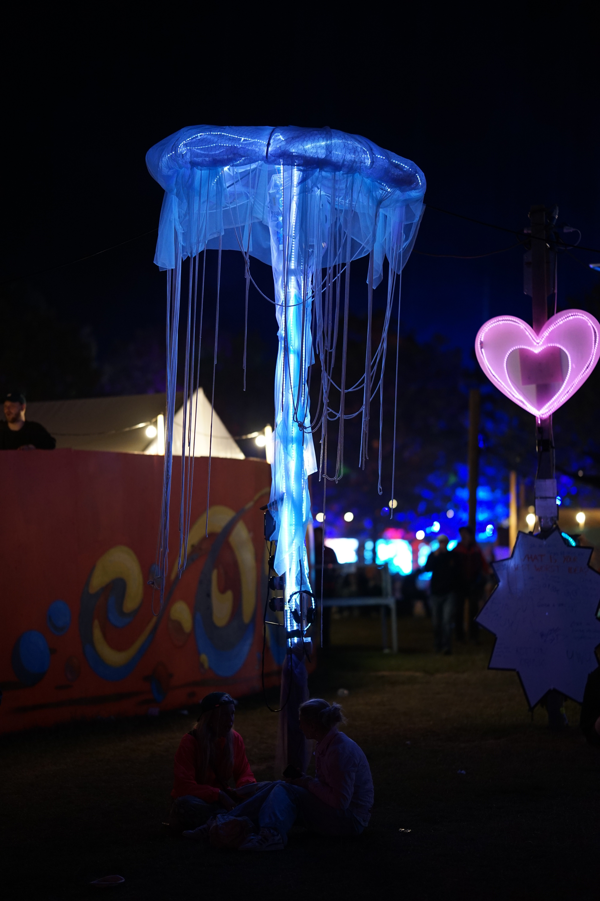

Jellyfish on Roskilde Festival
An interactive light installation exhibited at Roskilde Festival, exploring human touch and proximity through responsive light behavior.

Inspired by the movement and sensitivity of jellyfish, the piece created a shared sensory experience between humans and technology. My contribution combined digital fabrication and teaching support, helping turn a collaborative design into a physical installation.

Designing for a hectic and unpredictable environment like Roskilde Festival was an exciting challenge. It demanded quick thinking, hands-on experimentation, and the ability to balance artistic vision with practical constraints. The process taught me how to create something playful and engaging that could survive and thrive in a chaotic setting.
← Back to Portfolio